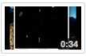

Gabriel J. Pérez Irizarry
Computer Engineering Student
Objective
To expand my engineering knowledge and experience with a Master's degree at an awesome University.
Skills
App Development
Talent for building applications for Windows, Mac OSX, Linux and Android.
Web Development
Ability to create, manage and enhance interactive and secure web applications.
Project Direction
Proven ability to lead and manage a wide variety of design and development projects in team and independent situations.
Technical
- Java
- Python
- C and C++
- x86 Assembly
- Bash
- Emacs
- Eclipse
- Hg/Git/Svn
- GNU/Linux
- Mac OS X
- Windows XP/Vista/7
- Android
Work Experience
Track All Inc, Caguas PR
Mobile Software Developer
Summer 2011
Developed an Android application capable of reporting potholes on the road, acts of vandalism (e.g. graffiti), illegal trash dumping and other problems that affect cities worldwide. People are able to install this application, take a picture of the item, add notes and other information and upload it and view a map with all the items. [View Track All Page]

Google Summer of Code - Sunlight Foundation
GSoC Student
Summer 2010
Worked with the Sunlight Foundation on the 50 States project as a GSoC student. Google Summer of Code is a program where Google sponsors students to work full-time on Free and Open Source projects during the summer. The 50 States project wants to make available data from all of the US States legistaltures through a single easy to use API. I worked on the development of several scrapers for several States including Hawaii, Colorado and Oregon. [View GSoC Page] [View the Sunlight Foundation Page]
IBM Linux Technology Center, Austin TX
Pre-Professional Programmer
Summer 2009
Worked on enhancing and solving issues related to the installer of a Linux distribution developed by IBM. Some of the enhancements include the ability to create live USBs and CDs and virtual machine images. Worked with low-level Linux components such as the initrd/initramfs. [View LTC Page] [View the manager's final evaluation]
Research Projects
University of Puerto Rico
Developer
2010
Helped develop a 3D serious video game written in Java using JMonkeyEngine. The project aims to develop a factory simulation game that will help teach Industrial Engineering concepts.
University of Puerto Rico, NSF
Developer
2010
Helped develop a 3D serious video game written in Java using JMonkeyEngine. The project aims to develop a factory simulation game that will help teach Industrial Engineering concepts.
University of Puerto Rico, Lockheed Martin, IAP and PR-LSAMP
Developer
2009
Collaborating on promoting a set of contributed libraries to the core libraries of the VXL project, an open source computer vision library. Has participated in poster sessions and oral presentations for this project. The work is being coordinated by Professor Miguel Figueroa-Villanueva.
Univertity of Puerto Rico
Developer
Spring 2008
Began implementing with Professor Marko Schütz a software metrics system for NetBSD and published a paper as part of the project.
Awards
Reto 2.0 2011 Award Winner
Web Developer
2011
The competition was opened to all college students and it was sponsored by IBM, HP and Microsoft. The idea was to promote college students to build a web 2.0 application. My team built http://enterar.me which roughly translates to: learn. The goal of the site is to have a single view of news events that are happening around me and being shared by my friends. It pulls data from Twitter and Facebook and even includes sentiment analysis to show whether it's "good news" (e.g. the US government is debt free) or "bad news" (e.g. 9.8 Earthquake Hits Chile). [View News Paper Clipping] [View Enterar.me]

{kind=link}


Personal Projects
Student Organizations
Free Culture @ UPRM
Founder and President
2007-Present
Students for Free Culture (SFC) is a diverse, non-partisan group of students and young people who are working to get their peers involved in the free culture movement. SFC chapters exist at over 40 colleges and universities around the world. SFC has collaborated with Creative Commons, the Electronic Frontier Foundation, Public Knowledge, Downhill Battle, and other free software and media reform groups. In our local chapter I've helped build our online presence (website, blog, twitter, facebook) and worked on various activities such as: Ubuntu Install Fest, Open Source Game Night, Free CD Giveaway and a Petition for Free/Open Books. [View freeculture.org] [View our local chapter's website]
{kind=link}
{kind=link}
School Projects
Microprocessors II
Student
2010
Our goal was to use an Arduino Micro Controller to build a Remote Control (RC) for a Quadcopter. I worked as a Project Manager and my tasks included getting status reports from everyone, keeping the project on schedule and serving as a point of contact for the professor. My main contribution to the project was to get over the air serial communication working correctly and reliably between our RC and the Quadcoper. The remote control was sending positional data relative the RC's position and receiving data from various sensors such as: temperature, sonar (altitude), latitude, longitude and velocity.
Microprocessors I
Student
2009
I worked developing two class projects in Intel 8082 Assembly that ran on DOSBox. The first one was a screen saver with two objects (ships) moving across the screen, they left a trail changing the background while they moved and after some time they would repaint the background. For the second one I was tasked with creating a Piano you could play with your keyboard. When you pressed a keys should sound and lit up on the screen accordingly. It also had the ability to record and playback songs.
Advanced Programming in Java
Student
2008
I did three class projects in Java for my Advanced Programing course. The first one was a financial calculator, you are to do everything you would on a normal calculator and you can calculate things like interest over a number of periods given a certain balance. The second one was a Mandlebrot set, a particular mathematical set of points, whose boundary generates a distinctive and easily recognizable two-dimensional fractal shape. The last one is game called Omega Space, you can move your ship and shoot bullets at asteroids and enemy ships.
Education
Major : Computer Engineering
Expected Graduation Date : May, 2012
GPA : 3.36/4.00
GPA : 3.36/4.00
University of Puerto Rico, Mayaguez (2006-Present)
Relevant Courses : Advanced Programming, Data Structures, Computer Graphics, AI, Design and Analysis of Algorithms, Programing Languages, Computer Architecture, Unix Systems Administration, Operating Systems, Microprocessor Interfacing, Circuit Analysis, Analog and Digital Electronics.
Gabriel J. Pérez Irizarry — gabrieljoel@gmail.com — (787)529-1050